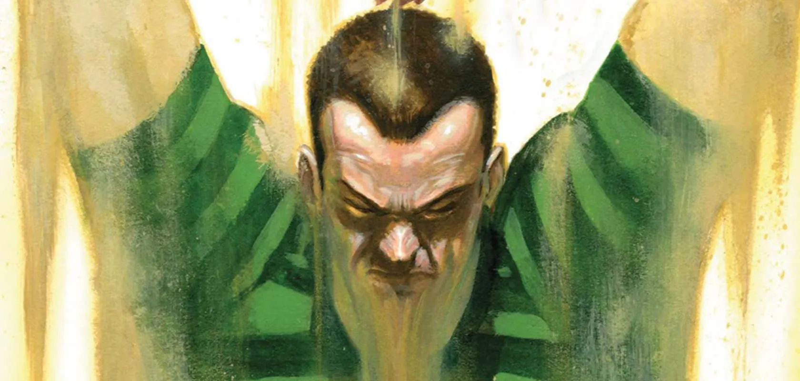
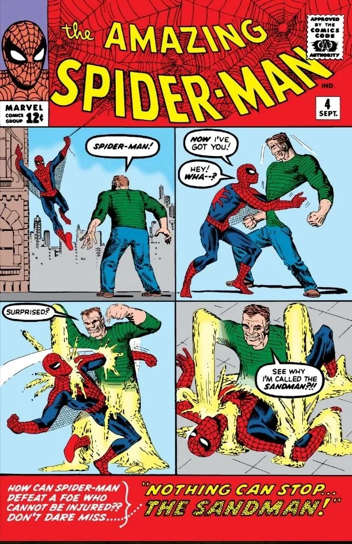
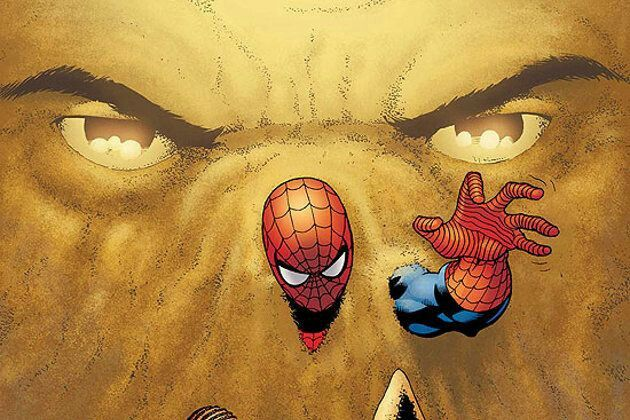

Spider-Man|
El Duende Verde |
Electro|
Doctor Octopus|
Mysterio|

¿Quién es Flint Marko? (Perfil Biográfico Completo)
Sandman (El Hombre de Arena), cuyo nombre real es William Baker (alias criminal Flint Marko), es uno de los antagonistas más antiguos, físicamente imponentes y moralmente complejos del universo de Marvel Comics.
Nacido en un entorno de extrema pobreza en Brooklyn, Nueva York, William fue abandonado a temprana edad por su padre. Durante su juventud desarrolló un talento excepcional para el fútbol americano y la escultura en arena en las playas de Coney Island. Sin embargo, tras arruinar su carrera deportiva al dejarse sobornar para amañar un partido universitario, adoptó el seudónimo criminal de "Flint Marko" y se adentró en el mundo de la delincuencia organizada y los robos a mano armada.
El Accidente Radiológico y la Transformación Molecular
Tras escapar de la prisión de máxima seguridad en Ryker's Island, Marko huyó hacia el sur de Estados Unidos buscando refugio:
- El accidente en el sitio nuclear: Infiltrado en una zona restringida de pruebas de armas atómicas cerca de Savannah, Georgia, Marko se ocultó en un terreno de dunas de arena justo en el momento en que detonó un reactor experimental nuclear.
- La fusión molecular: La intensa radiación gamma alteró radicalmente su estructura celular en lugar de matarlo, provocando una hibridación biológica que vinculó su conciencia y ADN con las partículas de arena de la playa.
- Surgimiento del estado metamórfico: Descubrió que su cuerpo biológico original había dejado de existir en forma orgánica tradicional, convirtiéndose en una masa amorfa de arena consciente que podía controlar a voluntad a nivel psíquico.
Creadores Detrás del Personaje y sus Aportaciones:
- Stan Lee (Guionista y Editor): Concibió al personaje con la idea de crear un villano físicamente invulnerable a los golpes convencionales de Spider-Man, además de construir con los años una personalidad trágica y empática alejada de la maldad pura.
- Steve Ditko (Dibujante y Co-creador): Diseñó su icónica apariencia visual con playera de rayas verdes y pantalón marrón, además de plasmar en el papel las espectaculares transformaciones físicas de sus manos en armas pesadas (mazas, martillos y escudos).

Hizo su debut oficial en The Amazing Spider-Man #4 (publicado en septiembre de 1963), consagrándose como uno de los primeros supervillanos de la historia de Marvel.
Anatomía, Poderes y Debilidades Específicas
La física biológica de Sandman lo convierte en una de las entidades metamórficas más poderosas del planeta:
- Grano de Fe (*Grain of Truth*): Su mente y conciencia residen en un único grano de arena clave. Mientras ese grano permanezca intacto, Marko puede reconstruir la totalidad de su cuerpo absorbiendo cualquier tipo de sílice o tierra circundante.
- Manipulación de masa y densidad: Puede alterar la cohesión de sus partículas, cambiando de un estado tan fluido como el polvo flotante a una densidad sólida comparable a la piedra arenisca o el granito sólido (alcanzando fuerza para levantar más de 85 toneladas).
- Constructos de combate: Moldea de forma instantánea sus extremidades para convertirlas en mazas gigantes, picos, martillos neumáticos, muros defensivos o tormentas de arena de alta velocidad capaces de erosionar metal.
- Vulnerabilidades elementales:
- Agua: Si se expone a grandes cantidades de agua, pierde la cohesión de sus granos, convirtiéndose en lodo pesado e inmovilizado.
- Calor extremo y Fuego: Temperaturas superiores a los 1,000 °C pueden vitrificar su cuerpo, transformando su arena en cristal sólido e impidiéndole moverse hasta que se rompa.

Evolución Narrativa: De Delincuente a Héroe Reformado
A diferencia de otros villanos obsesionados con la dominación mundial o la venganza:
- Fundador de Los Seis Siniestros (1964): En The Amazing Spider-Man Annual #1, fue reclutado por el Doctor Octopus junto a Mysterio, Electro, Kraven el Cazador y el Buitre para formar la primera alineación del icónico grupo de supervillanos.
- Etapa de redención y Los Vengadores: En los años 80 y 90, impulsado por una profunda crisis existencial y una conversación con la mole (The Thing), Marko decidió abandonar el crimen. Trabajó como mercenario ético para Silver Sable en su *Wild Pack* y recibió un indulto presidencial por parte del gobierno de EE. UU., llegando a ser nombrado miembro de reserva de Los Vengadores (The Avengers) bajo el liderazgo del Capitán América.
- Motivación Paternal: En múltiples continuidades (incluyendo cómics y adaptaciones cinematográficas), sus crímenes han estado motivados por el amor hacia su familia, buscando conseguir dinero para costear los tratamientos médicos de su hija enferma (Keemia / Penny Marko) o proteger a su madre Flo Baker.

Conclusión e Impacto del Personaje
Sandman destaca en el catálogo de villanos de Spider-Man por representar la complejidad moral: pasó de ser un criminal de poca monta atrapado en un accidente trágico a un personaje profundamente humano capaz de buscar la redención sincera. Su naturaleza metamórfica no solo ofreció a Stan Lee y Steve Ditko una forma innovadora de desafiar los poderes y la agilidad de Spider-Man, sino que demostró que detrás de una fuerza de la naturaleza formidable puede existir un hombre dispuesto a luchar por la salvación de sus seres queridos.
